My Research
- X-ray Astronomy
- Cataclysmic Variable Stars
- The variability of CV stars
- The Japanese X-ray Space Telescope, ASCA
- Seminal Publication
- Other Publications
X-ray Astronomy
Gas at different temperatures emit light at different wavelengths. The images to the right show the well know region of sky around the constellation of Orion. The left image is the infra-red view of the cool gas (below ~3,000o), the central view is what we are used to seeing (red light originates from gas around 4,000o, and blue light from 40,000o gas; the Sun, being yellow, is somewhere in the middle at ~6,000o), and the image to the right shows X-rays the originate from gas at over a million degrees.
To understand what the Universe is doing in all its entirety, astronomers need to observe the night sky at all these wavelengths.
|
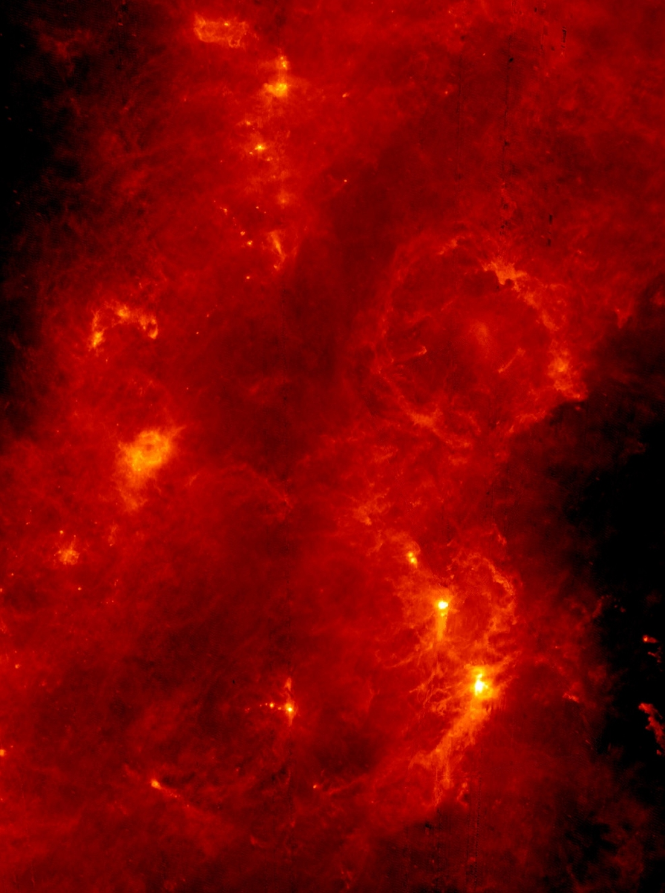
The infra-red view of Orion
|
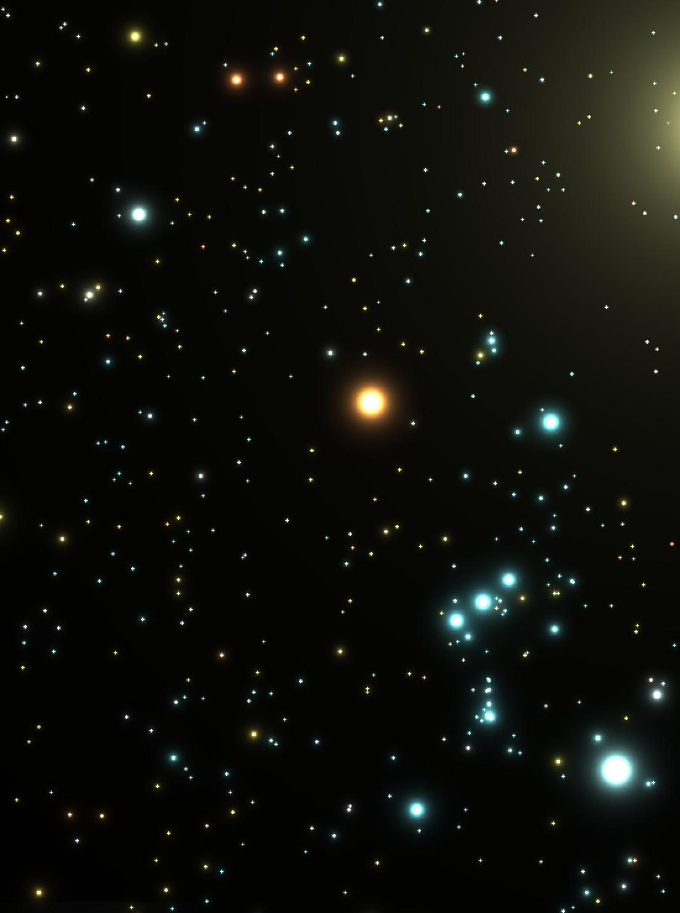
The visible view of Orion
|
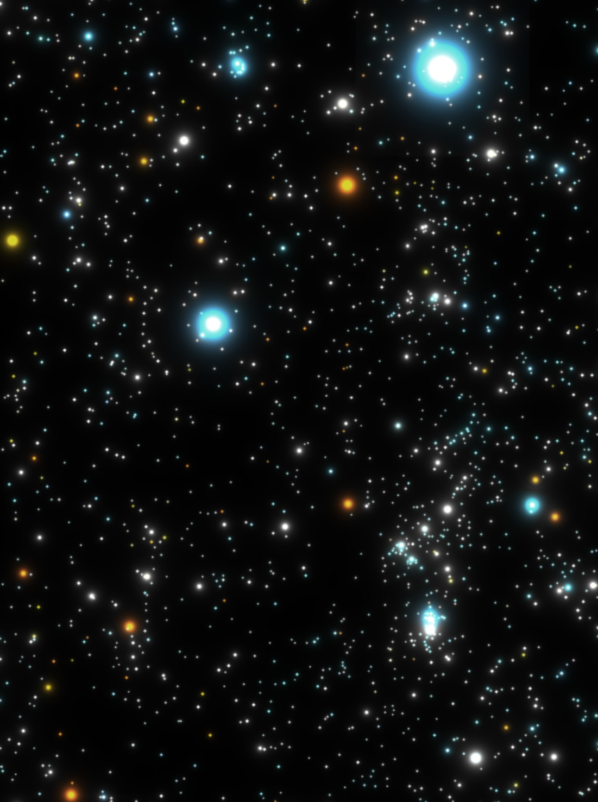
The x-ray view of Orion
|
Cataclysmic Variable Stars
My PhD research was looking at the X-ray emission from Cataclysmic Variable stars, using the Japanese ASCA space telescope. These stars are close binary systems where a Sun-like dwarf star and a white dwarf star orbit about each other in around 7 hours. This proximity leads to gas flowing from the Sun-like (companion) star towards the white dwarf primary, at a rate of several thousand million tonnes per second. Due to the angular momentum of the gas, it does not flow directly onto the white dwarf star, but spreads out to form a disk around it. It is this accretion disk that dominates our view of these systems.
Because these two stars are orbiting each other so closely, they are impossible to resolve with even the most powerful telescopes we have available. So when we observe them, we only see a point of light, most of which originates from the accretion disk.
Gas can build up in the disk until it reaches a critical point where gas can suddenly flow through the disk at a dramatically increased rate - an analogy to this is snow building up on a mountainside until an avalanche is triggered. When this happens, on time-scales of anything between weeks to years depending on the binary system, they can appear to brighten by a factor of 100 in just 6 hours, and star bright for days or months as the disk drains away.
As the gas eventually strikes the white dwarf star at the centre of the disk, it is so violent and energetic, that the gas reaches temperatures of a million degrees and emits X-rays amidst some fascinating physics. My research was looking at those X-rays, and figuring out the finer details of what happens in these systems.
The variability of CV stars
Cataclysmic variable stars vary in brightness, as their name suggests, cataclysmically. The two light curves below are from a long observing campaign of the stars SU UMa & WW Cet, which I was awarded time to observe with the Rossi X-ray Timing Explorer space telescope in 2001. The top row shows the optical brightness, as measured by amateur astronomers from around the world; the middle panel shows the X-ray brightness of the system, and the lower panel shows the X-ray hardness (the ratio of high-energy to low-energy X-rays).
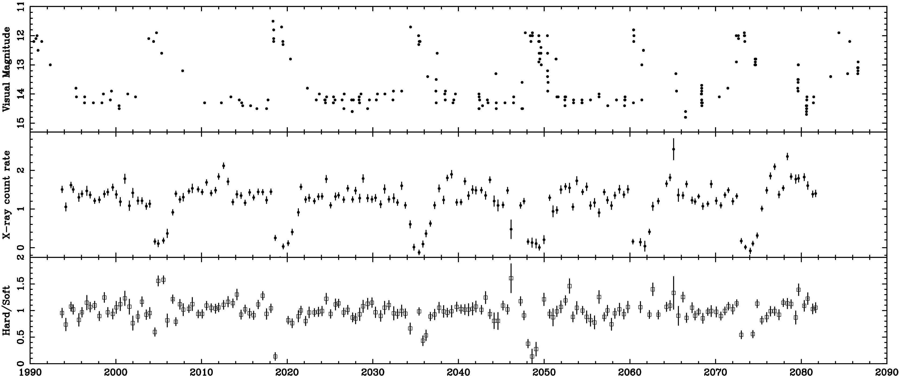
The optical and X-ray light curves of the cataclysmic variable star, SU UMa
|
|
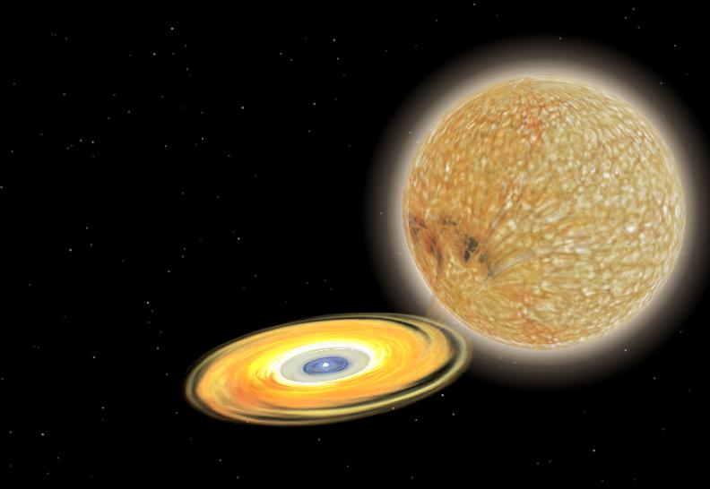
Celestia Simulation by Chris Moran of the Cataclysmic Variable, SS Cyg
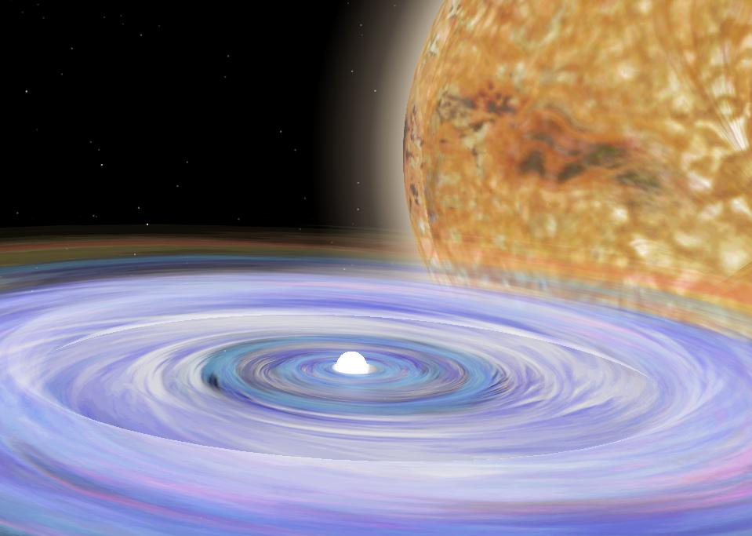
Celestia Simulation by Chris Moran of the Cataclysmic Variable, SS Cyg
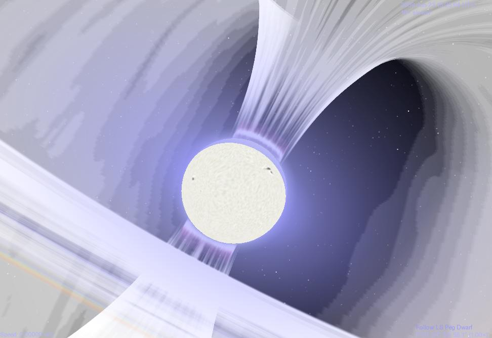
Celestia Simulation by Chris Moran of the Cataclysmic Variable, LS Peg
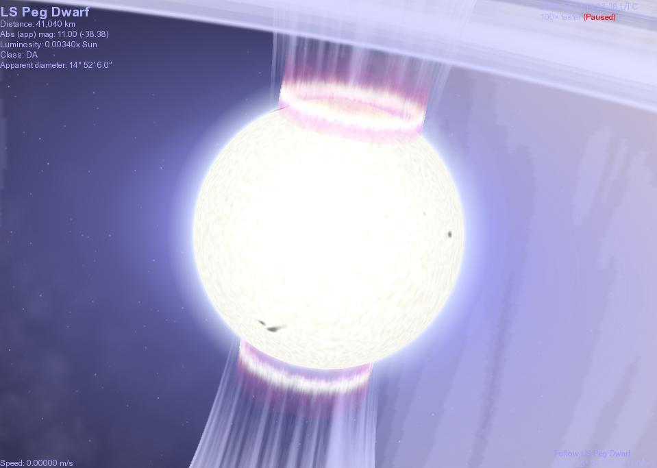
Celestia Simulation by Chris Moran of the Cataclysmic Variable, LS Peg
|
The Japanese X-ray Space Telescope, ASCA
The Japanese ASCA X-ray Space Telescope operated successfully for eight years until a geomagnetic storm struck on July 14, 2000, sending ASCA into an uncontrollable spin with a period of about 3 minutes, thus preventing the solar panels from re-charging the batteries. The geomagnetic storm also expanded the Earth's atmosphere, increasing the atmospheric drag that ASCA experienced.
After July 2000, no scientific operations could be performed, and ASCA finally re-entered the Earth's atmosphere over the western Pacific on March 2, 2001.
|
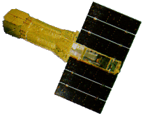
The Japanese ASCA X-ray Space Telescope
|
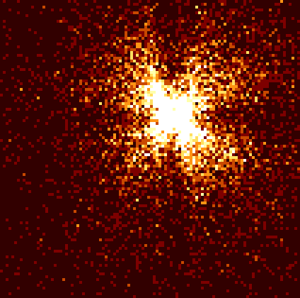
While ASCA had poor imaging capabilities...
|
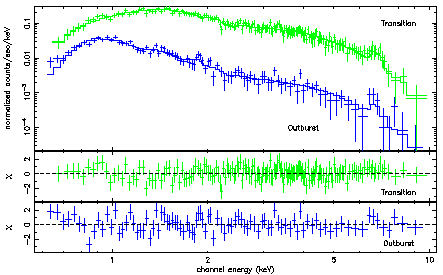
...its SIS & GIS detectors had high spectral resolution.
|
Seminal Publications
The complete set of ASCA X-ray observations of non-magnetic cataclysmic variables
Baskill, Wheatley & Osborne, MNRAS, 2005
NASA ADS: Full paper
X-ray properties of cataclysmic variable stars
Baskill, PhD Thesis, 2003
University of Leicester: Full Thesis
ASCA X-ray observations of the disc wind in the dwarf nova Z Camelopardalis
Baskill, Wheatley & Osborne, MNRAS, 2001
NASA ADS: Full paper
Other publications
Full NASA ADS Publication list
|